Birth of the Yamaha Brand Torakusu Yamaha repaired an organ at an elementary school in Hamamatsu, and he succeeded in producing an organ in the same year. The Yamaha brand trademark "Yamaha" is derived from the name of the company's founder, Torakusu Yamaha, who was a pioneer in the manufacture of Western-style musical instruments..
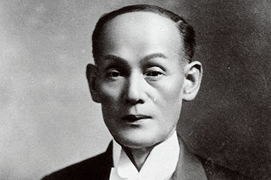The organ, however, was criticized harshly for its poor tuning. Undaunted, and starting from zero, Torakusu began studying music theory and tuning. After seemingly endless struggles, he was finally able to complete the organ. It’s easy to see how he came up with the concept of the tuning fork mark, inspired by the difficult experience of studying tuning while holding a tuning fork in his hand.
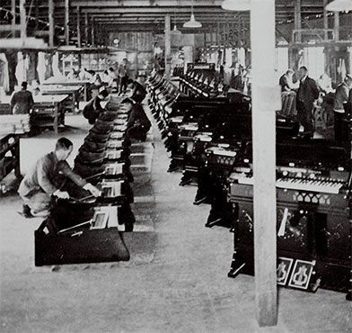Nihon Gakki Seizō Kabushiki gaisha, lit. 'Japan Musical Instrument Manufacture' was established in 1887 as a reed organ manufacturer by Torakusu Yamaha (山葉寅楠) in Hamamatsu, Shizuoka Prefecture and was incorporated on 12 October 1897.
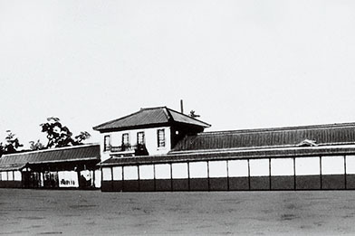Spreading Music Culture and Taking on New Business Challenges, and Going Overseas as a Comprehensive Musical Instrument Manufacturer
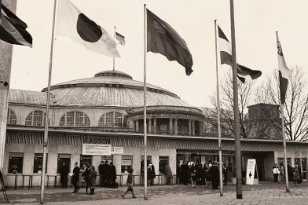The Yamaha YA-1 is the first motorcycle produced by the Yamaha Motor Company. It was made from 1955 to 1958. This was also the first vehicle in Japan to have a primary kick start system (allowing the engine to be started with the transmission in gear). The Society of Automotive Engineers of Japan (in Japanese), includes the 1955 Yamaha 125YA-1 as one of their 240 Landmarks of Japanese Automotive Technology
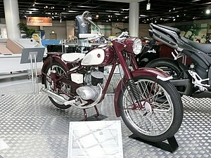Yamaha De Mexico S.A. de C.V. established with investment by Nippon Gakki and local Mexican investors and begins sales of Yamaha Motor products
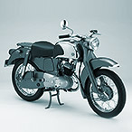Yamaha International Corporation (YIC) founded in U.S. as subsidiary of Nippon Gakki and begins sales of Yamaha Motor products Showa Works Ltd. joins Yamaha Motor group First Yamaha outboard motor "P-7" released First Yamaha FRP boat "CAT-21" and "RUN-13" released and press introduction held at Lake Ashin
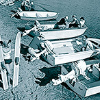Begins production of wind instruments Establishes Yamaha Music Foundation (becomes general incorporated foundation in 2011) Expands into Europe with founding of Yamaha Europa GmbH in former West Germany
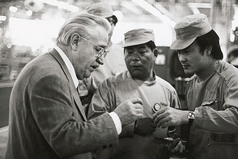Begins production of semiconductors *Transitions to fabless manufacturing in 2015
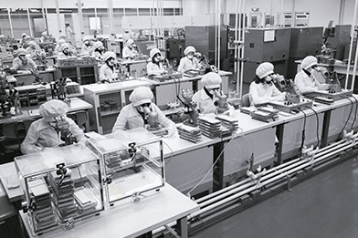Changes corporate name from Nippon Gakki Co., Ltd. to Yamaha Corporation to mark 100th year in business Opens Yamaha English-language school
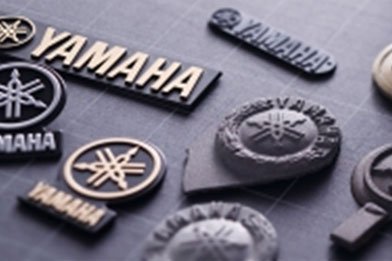Establishes Yamaha Music & Electronics (China) Co., Ltd. Establishes Yamaha Music Holding Europe GmbH in Germany (currently Yamaha Music Europe GmbH)
Completes integration of Japanese piano factories into Kakegawa plant
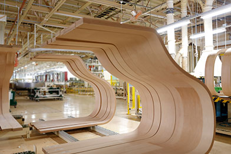Reopens the flagship “Yamaha Ginza Shop” as an experience-oriented brand shop
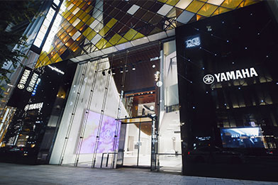